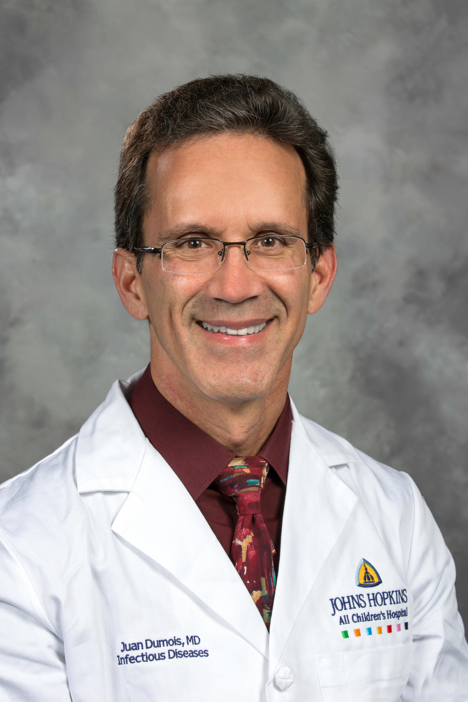

DR CHAMINDA GARUSINGHE
Cardiology
At St. Mary’s Hospital, our dedicated team of doctors embodies excellence in healthcare with their extensive expertise and compassionate care. Each physician is highly trained and brings a wealth of experience to their specialty, ensuring that every patient receives personalized and effective treatment. Committed to advancing medical knowledge and improving patient outcomes, our doctors work collaboratively to provide exceptional care in a supportive and empathetic environment. At St. Mary’s, we believe that exceptional healthcare begins with a team of exceptional doctors.
Our Medical Experts


